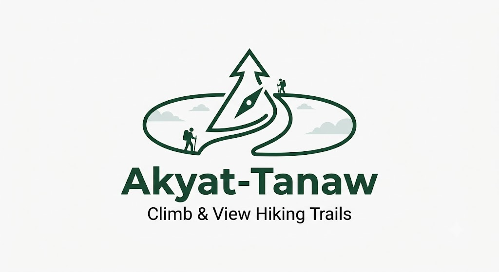
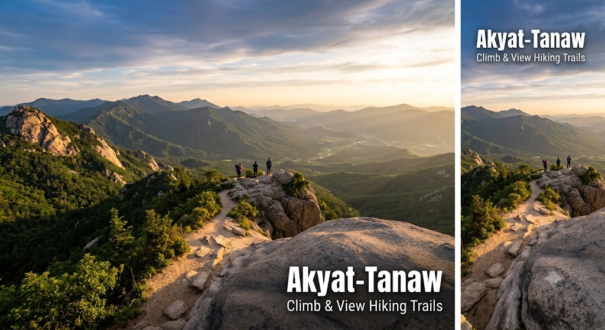

Why Akyat-Tanaw?
We aggregate verified trail guides, difficulty ratings, and view highlights so you can pick the right trek for your fitness level.

Akyat-Tanaw
Your ultimate guide to scenic summit lookouts in the Philippines.
Explore All TrailsWe aggregate verified trail guides, difficulty ratings, and view highlights so you can pick the right trek for your fitness level.
Loading visit history...